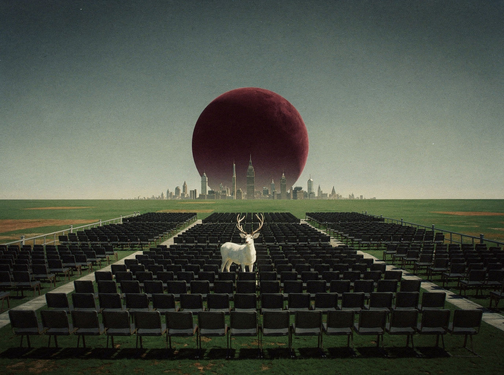
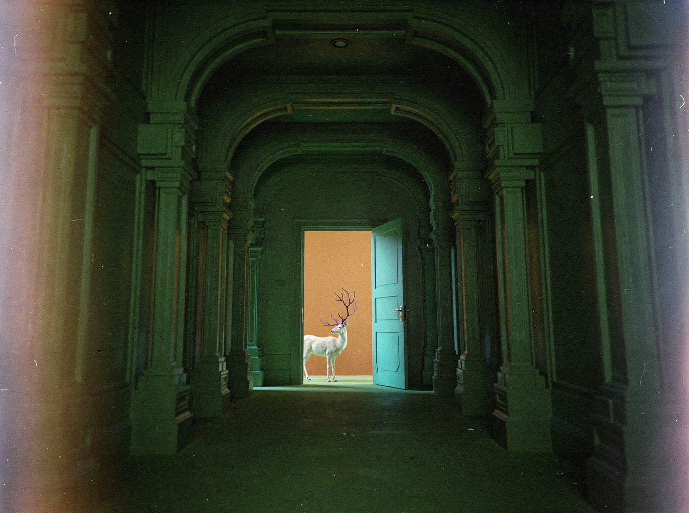
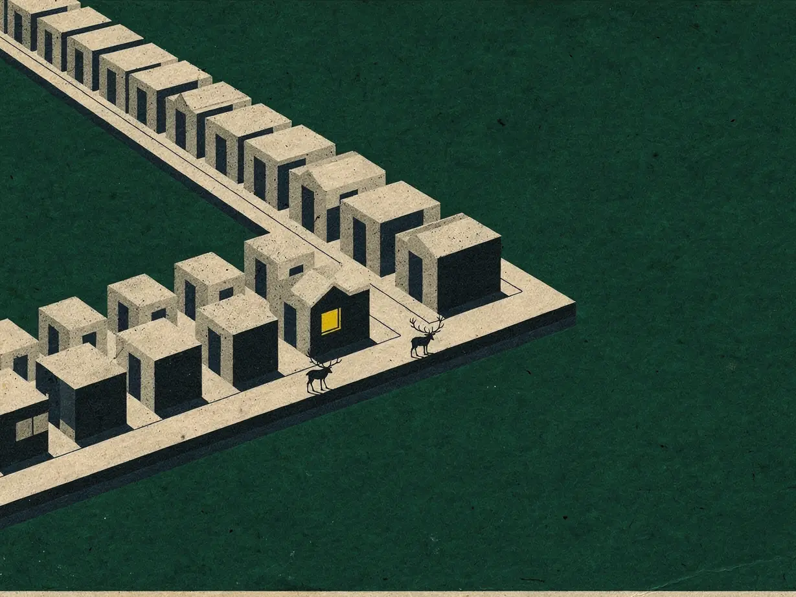
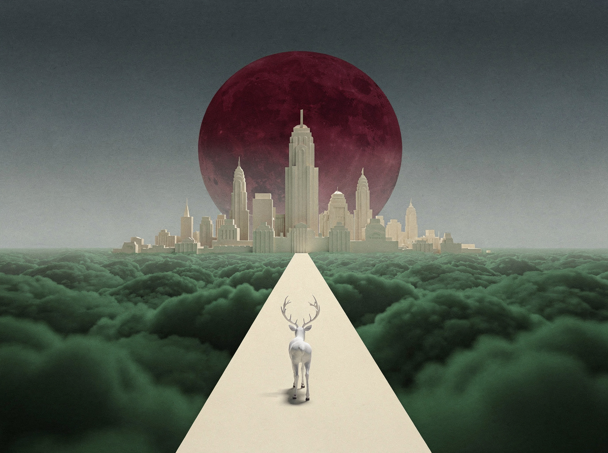
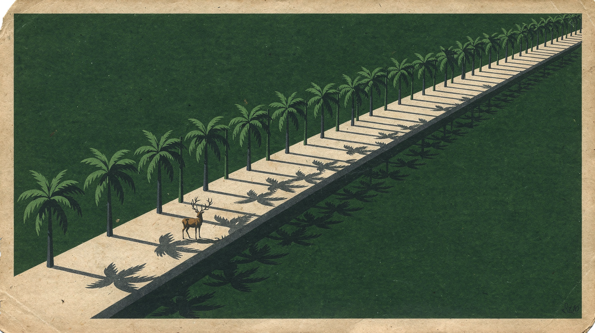

BerufsalltagEveryday work
Das GeschäftsessenThe business dinner
Zwischen Tischgespräch und fachlicher Substanz wechseln, ohne eines von beidem zu verlieren.Move between table talk and professional substance without losing either.

Disce ist ein KI-gestütztes Lernsystem für professionelles Deutsch auf B2–C2. Es verbindet Diagnose, gezieltes Üben und Rückmeldung für die beruflichen Situationen, in denen Expertise auf Deutsch sichtbar werden muss: vom Gespräch im Team bis zur entscheidenden Verhandlung. Das Proof of Principle (Cervus) ist abgeschlossen; der nächste Prototyp wird entwickelt, eine Private Beta ist geplant.Disce is an AI-supported learning system for professional German at B2–C2. It combines diagnosis, targeted practice and feedback for the professional situations where expertise has to become visible in German: from a team conversation to a decisive negotiation. The Cervus proof of principle is complete; the next prototype is in development and a private beta is planned.
Verstehen ist die Voraussetzung. Wirkung ist das Ziel.Understanding is the prerequisite. Impact is the goal.
Sie können der Besprechung folgen, und Sie kennen Ihr Fach. Deutsch beherrschen Sie auf B2–C2. Aber die Momente, die bestimmen, wie andere Sie sehen, passieren oft zwischen den Tagesordnungspunkten: beim Mittagessen, nach einem Vortrag oder in einem Gespräch, auf das kein Kurs vorbereitet hat.You can follow the meeting, and you know your field. Your German is B2–C2. But the moments that shape how people see you often happen between the agenda items: over lunch, after a presentation, or in a conversation no course prepared you for.
Wichtige Beziehungen und Entscheidungen entstehen oft nebenbei. Den natürlichen Einstieg zu finden ist schwerer, als der Agenda zu folgen.Important relationships and decisions often take shape informally. Finding a natural way in is harder than following the agenda.
Widersprechen, Interesse zeigen, nachfragen oder eine Grenze setzen — ohne zu schroff und ohne zu distanziert zu klingen.To disagree, show interest, ask for clarification, or set a boundary — without sounding too blunt or too distant.
Der Beitrag ist stark. Zögern oder ein unpassendes Register können ihn trotzdem verdecken.The contribution is strong. Hesitation or an ill-fitting register can still obscure it.

Weniger Zeit dafür, einen Satz vorher im Kopf zu proben. Mehr Aufmerksamkeit für das Argument selbst. An einem deutschen Gespräch teilnehmen, statt ihm zu folgen.Less time spent rehearsing a sentence before saying it. More attention left for the argument itself. Participating in a German conversation rather than tracking it.Was wir mit Disce verändern wollenWhat we are building Disce to change
Vom Gespräch vor der Besprechung bis zu dem, das über den beruflichen Weg entscheidet.From the conversation before the meeting to the one that changes your career.
Zwischen Tischgespräch und fachlicher Substanz wechseln, ohne eines von beidem zu verlieren.Move between table talk and professional substance without losing either.
In ein Gespräch einsteigen, das schon läuft, bevor die Agenda die Regeln setzt.Join a conversation already in progress, before the agenda sets the rules.
Einen Platz finden, wenn schnell, beiläufig und nicht über die Arbeit geredet wird.Find your place when the talk is fast, casual, and not about work.
Auf spontane Fragen antworten, wenn der vorbereitete Vortrag vorbei ist.Answer spontaneous questions once the prepared talk is over.
Anders denken und es sagen, ohne schroff zu klingen und ohne auszuweichen.Hold a different view out loud, without sounding blunt and without dodging.
Ein Kundengespräch halten, wenn es die vorbereitete Linie verlässt.Steer a client conversation when it leaves the line you prepared.
Die eigene Erfahrung rüberbringen, ohne sie klein zu reden oder aufzusagen.Bring your experience across without underselling it or sounding rehearsed.
Den eigenen Beitrag sichtbar machen und auf Rückmeldung antworten, ohne in die Abwehr zu gehen.Make your contribution visible, and respond to feedback without turning defensive.
Von der klinischen Fachsprache zu klaren, ruhigen Worten, die ankommen.Move from clinical language to clear, calm words a patient can take in.
Weitergeben, worauf es ankommt — in einer Form, mit der die nächste Kollegin sofort arbeiten kann.Pass on what matters, in a form the next colleague can act on right away.
An akademischer Diskussion und Entscheidung teilnehmen, nicht nur an der Forschung.Take part in academic discussion and decisions, not only in the research itself.
Zwischen Patientengespräch, Dokumentation und Übergabe wechseln, ohne den Faden zu verlieren.Move between patient conversation, documentation, and handover without losing the thread.
Es sind die Momente, um die es Disce geht — keine Liste fertiger Übungen.These are the moments Disce is built around — not a list of finished exercises.
Ein Ziel setzen, eine kurze Standortbestimmung machen und dann genau das trainieren, was echte Kommunikation von Ihnen verlangt. Rückmeldung gibt es zu Ton, Register und kommunikativer Wirkung, nicht zu gesammelten Punkten.Set a goal, take a short benchmark, then train precisely what real communication demands of you. Feedback covers tone, register and communicative effect, not points.
Eine Prüfung, eine Präsentation, eine Bewerbung, der Berufsalltag im DACH-Raum. Die lernende Person legt fest, woran alles Weitere ausgerichtet wird.An exam, a presentation, a job application, everyday working life in the DACH region. The learner defines what everything else is calibrated against.
In einer kurzen Standortbestimmung ermitteln wir den Stand in Sprechen, Schreiben, Hören und Lesen. Dazu gehören Register und Prosodie, nicht allein der abrufbare Wortschatz.In a short benchmark, we establish where the learner stands across speaking, writing, listening, and reading. That includes register and prosody, not vocabulary recall alone.
Kurze Schreib- und Sprecheinheiten mit Rückmeldung zu Ton, üblichen Formulierungen und kommunikativer Wirkung. Ein Fortschrittsprofil zeigt, welche Dimensionen sich verändern.Short writing and speaking sessions with feedback on tone, typical phrasing, and communicative effect. A progress profile shows which dimensions change.


Ein Zertifikat belegt ein Niveau. Ob die Sprache im Beruf wirkt, entscheidet sich im Gespräch. Disce arbeitet an dieser Lücke.A certificate records a level. Whether the language works in practice is settled in the conversation. Disce works on that gap.Worum es Disce gehtWhat Disce is about
Fünf Gründerinnen und Gründer aus Lernpsychologie, interkultureller Strategie, Marketing und Operations sowie Business Development, unterstützt von Beratenden aus der Berliner Gründungsszene und der Universität Potsdam.Five founders spanning learning psychology, intercultural strategy, marketing and operations, and business development, supported by advisors from Berlin's startup ecosystem and the University of Potsdam.

Disce befindet sich in der Validierung und auf dem Weg zur Eintragung. Verfolgen Sie den Entwicklungsstand oder melden Sie unverbindlich Ihr Interesse an der geplanten Private Beta an.Disce is in validation and on the way to incorporation. Track the development status, or register your interest in the planned private beta.